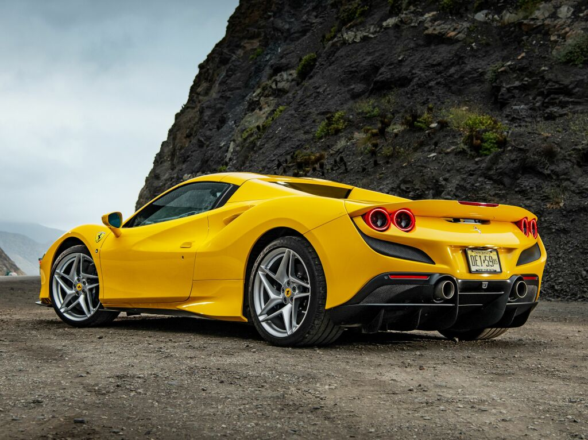
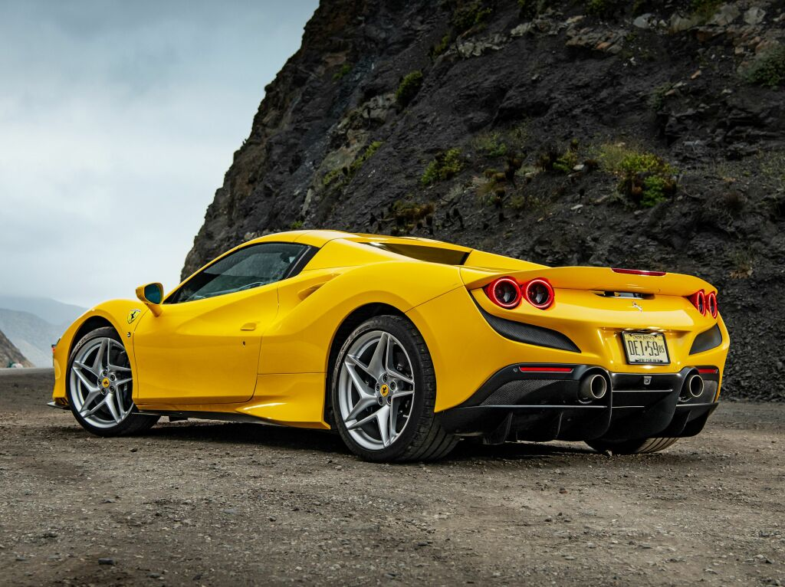

Preparem-se para experimentar o que há de mais moderno em engenharia e
estilo italiano com a impressionante Ferrari SF90 Spider 2023. Este supercarro é o auge do design
automotivo da Ferrari, combinando tecnologia de ponta com linhas elegantes e aerodinâmicas que chamarão
a atenção aonde quer que você vá.
Sob o capô, a SF90 Spider é movido por um trem de força híbrido que oferece incríveis 986 cavalos de
potência, tornando-o a Ferrari de produção mais potente já construída. Com seu avançado motor elétrico e
motor V8 biturbo, este supercarro pode acelerar de 0 a 100 km/h em apenas 2,5 segundos e atingir uma
velocidade máxima de 340 km/h, ao mesmo tempo em que oferece uma economia de combustível
impressionantemente eficiente.
Mas a Ferrari SF90 Spider 2023 é mais do que apenas potência bruta. Ele também possui uma gama de
recursos avançados que tornam a condução mais agradável e conveniente. O teto retrátil hardtop pode ser
aberto ou fechado em apenas 14 segundos, permitindo que você aproveite o vento em seu cabelo e o sol em
seu rosto. A aerodinâmica sofisticada e o sistema de suspensão ativa fornecem manuseio e estabilidade
incomparáveis, enquanto o sistema de infoentretenimento de última geração e o sistema de áudio premium
garantem que cada direção seja uma experiência inesquecível.
Obviamente, a SF90 Spider também é uma obra de arte, com seu design elegante e aerodinâmico que combina
o estilo clássico da Ferrari com engenharia avançada. As linhas esculpidas, a frente agressiva e a
traseira impressionante se unem para criar um supercarro que é bonito e poderoso.
Portanto, se você está pronto para experimentar o que há de mais moderno em engenharia e estilo
italianos, não procure mais do que a Ferrari SF90 Spider.
Sob o capô, a SF90 Spider apresenta um trem de força híbrido, que combina um motor V8 biturbo de 4,0 litros com três motores elétricos. A potência combinada é de impressionantes 986 cavalos de potência, tornando-a a Ferrari mais potente já produzida. O carro pode acelerar de 0-100 km/h em apenas 2,5 segundos e tem uma velocidade máxima de 340 km/h. O SF90 Spider também possui um avançado sistema de tração nas quatro rodas, que oferece excelente tração e manuseio.
.png)
.png)
.png)
.png)
.png)
.png)
.png)